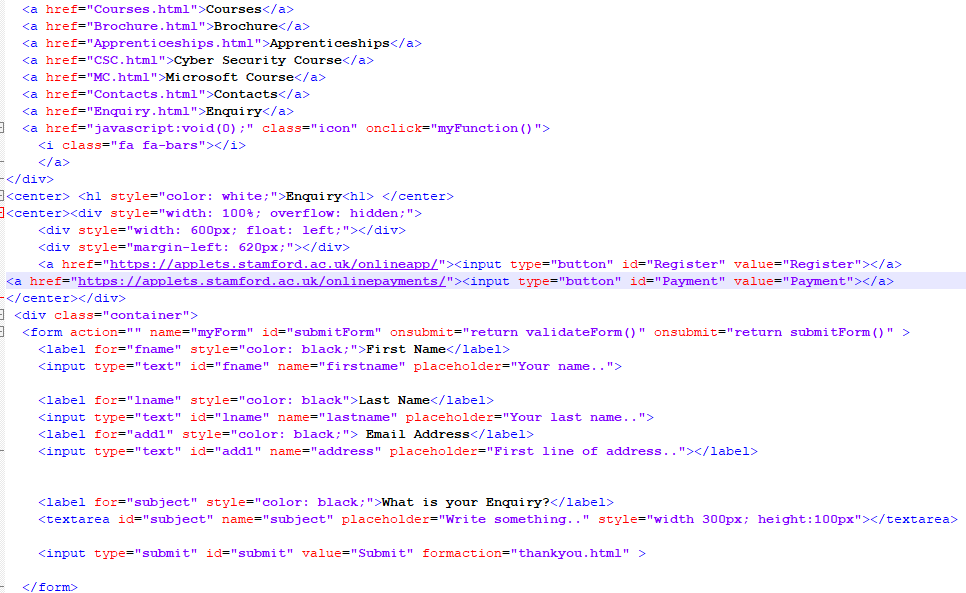
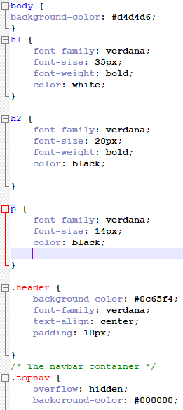

This section of the digital portfolio will have links to the websites I have created as well as some of the screen shots of the coding I have done to make them.
I have created 3 websites, one of them being this one that you are on right now, I coded all 3 of them with HTML and CSS coding. The coding was from a template our teacher gave us for us to start of our website with, then we could add to it to continue the website.
My First Website>This was the first website I created, I had to make atleast 8 pages, but I created more. In some of the pages are separate Naviation bars, to take you to various music styles and game genres.
Alot of audio and video were used in the making of this website, since it includes different music genre's people might like.
The brief was to choice one topic and focus on that, however I went a completely different and difficult route. I wasn't there when we recieved the brief and didn't know what I needed to do so I created this idea in my head what to do.
My idea for the website was for it to be suited for everyone, it would sort of be a new possibile social media platform, but based around your interests and likes, Obviously I don't have high levels of coding to do all that I imagine, this is just a simple form of it. However if I did have the right coding techniques, this website would have blogs, posts, a way for people to make comments and chat to each other, save their favorite genres of games music, movies and more. The website is designed to be personal to each user who uses it.
This website was for my assignment for Unit 13, where we had to create a new improved website for the digital skills centre in our college. The website must include: one table of data, a form, a PDF file, external websites and atleast 5 images.
The colour scheme I used for this site was based of the colour of the actual digital skills centre, so I thought it appropriate to use when creating the website. I coded the entire website myself like the others. Some of the coding was provided by the teacher but only in it's simpliest form, we still neeeded to add whatever we neeeded to it, like buttons for a form, the colour scheme, the layout of the formor table.
To show you what HTML and CSS coding is, and to prove I coded it myself I will show you some pictures of some of the code and explain it a little for you.
This is some of the HTML coding used when creating the enquiry page in the digital skills centre.
The coding shows some of the mechanics of how the nav bar works and the buttons andthe way the form on the enquiry page works.
This image is of some of the Css coding used for this digital portfolio.
Doing these website from college has made me realise I enjoy coding with HTML and Css and would like to work in Web design. I hope you have enjoyed exploring my websites, and thank you for your time.